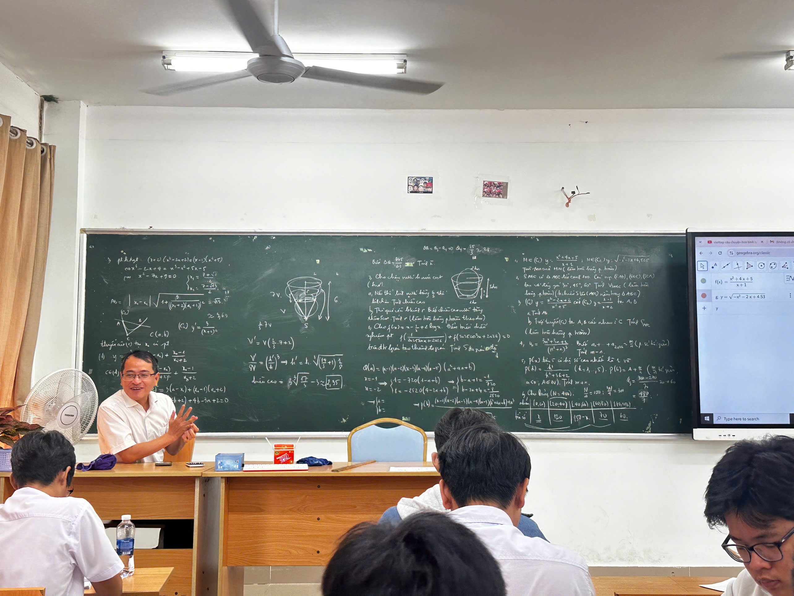
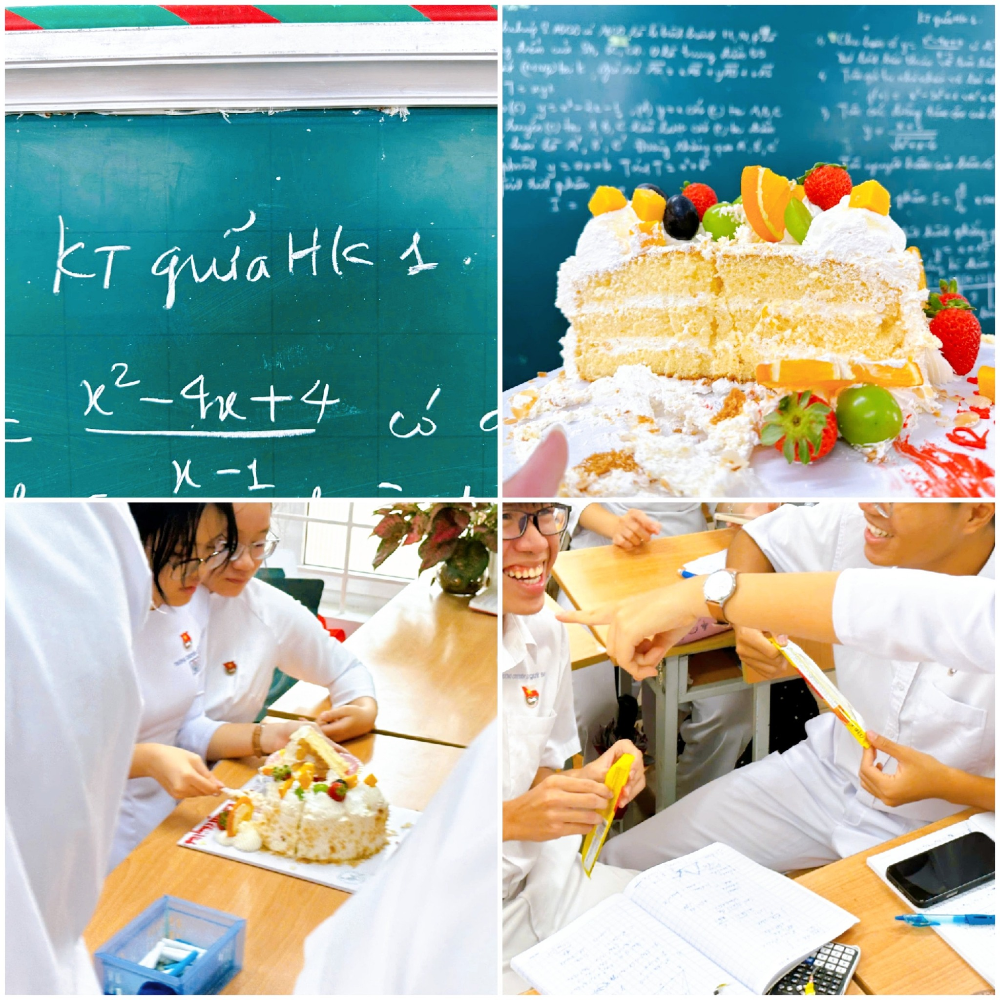

Những người lái đò thầm lặng

Thầy cô là những người đã dành trọn tâm huyết và tuổi trẻ để đứng trên bục giảng, lặng lẽ cống hiến vì sự trưởng thành của học sinh. Dẫu công việc nhiều áp lực và vất vả, nhưng thầy cô vẫn luôn tận tâm, kiên nhẫn và bao dung với học trò.

Dưới mái trường THPT Lê Quý Đôn, chúng em không chỉ được học kiến thức, mà còn nhận được sự quan tâm, chỉ bảo tận tình trong từng lời dạy, từng ánh mắt và từng cử chỉ. Những điều ấy sẽ mãi là ký ức đẹp theo chúng em suốt cuộc đời.
“Thầy cô là người gieo hạt, còn học trò là mùa quả ngọt.”